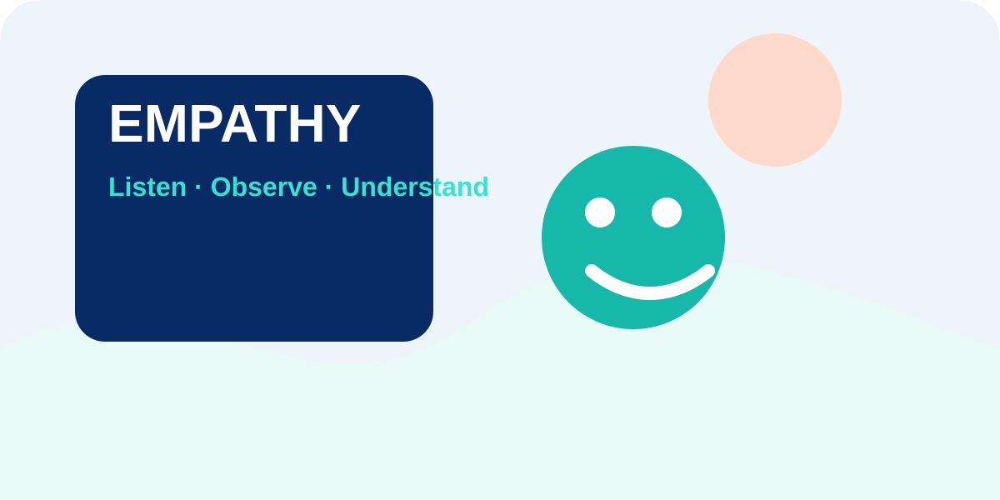

Phase 01 · Empathy
Understand real users before creating any solution.
Observe, interview, transcribe and map real evidence so your team can define the correct user need.
Empathy Rule for Beginners
You are a detective, not a doctor. Collect evidence first. Do not suggest a solution yet.
Quick Info: Empathy Phase
Start with the visual guide, then complete the four Empathy templates in order.
EMPATHY PHASE
Observe. Listen. Capture evidence. Understand users.
Phase 01 evidence flow
Phase 01
Input Templates
Complete T01 first, then T02, T03 and T04. Phase 01 is only complete after all four templates are saved and the quiz score is at least 3/5.
T01 POEMS Observation
Observe the real situation before asking questions.
Observe quietly. Record only what you see, hear and notice. Do not judge or suggest a solution yet.
P — People
O — Objects
E — Environment
M/S — Messages & Services
T02 AI Interview Question Generator
Generate and prepare open-ended interview questions to understand the user's real experience.
Use AI to brainstorm interview questions, then refine them. Avoid leading questions such as “Do you like our idea?” Ask about real experiences instead.
T03 Interview Audio-to-Text Transcription
Record the interview and transcribe the important parts using the user's own words.
Record the interview (with permission), then use AI or manual transcription. Focus on key moments, repeated concerns, emotions, surprising statements and exact quotes.
T04 Empathy Map
Organise evidence into what the user says, thinks, does and feels.
Use only evidence from observation, interview and transcript. Avoid assumptions.
Says
Thinks
Does
Feels
Complete these fields carefully. Phase 02 will use them to create Persona and User Need.
Empathy Quick Check Quiz
Pass mark: 3/5. After passing, submit Phase 01 and move to the verified completion page.